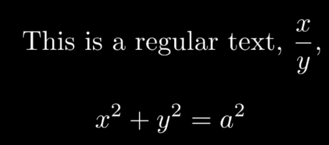
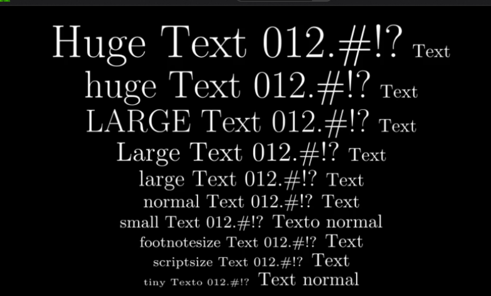

TextMobject文本类¶
声明
早期Elteoremadebeethoven有个仓库和配套的youtude教学视频， Animation course with Manim ，小破站有搬运 BV1W4411Z7Zt ， 然后cai-hust学习并且做了相关的教程MarkDown笔记 cai-hust_manim-tutorial-CN ， 这部分不是我写的，我只是想把Markdown、pdf等资料整合编辑成方便的文档格式，以方便查阅使用Manim，cai-hust已授权，表示标明链接仓库就行。
文本类 TextMobject
TextMobject(string)： 传入一个字符串
字符串可以是普通字符串或LaTeX格式或两者混合：
TextMobject("This is a regular text")
TextMobject("\\displaystyle\\frac{x}{y}") # displaystyle使字体能显示正常大小
两者混合则需要使用”$$” 或者”$”包括：
TextMobject(""" This is a regular text, $\\displaystyle\\frac{x}{y}$, $$x^2+y^2=a^2$$ """)
1565700699069¶
自然地，可以用LaTeX调整字体大小：
class SizeTextOnLaTeX(Scene): def construct(self): textHuge = TextMobject("{\\Huge Huge Text 012.\\#!?} Text") texthuge = TextMobject("{\\huge huge Text 012.\\#!?} Text") textLARGE = TextMobject("{\\LARGE LARGE Text 012.\\#!?} Text") textLarge = TextMobject("{\\Large Large Text 012.\\#!?} Text") textlarge = TextMobject("{\\large large Text 012.\\#!?} Text") textNormal = TextMobject("{\\normalsize normal Text 012.\\#!?} Text") textsmall = TextMobject("{\\small small Text 012.\\#!?} Texto normal") textfootnotesize = TextMobject("{\\footnotesize footnotesize Text 012.\\#!?} Text") textscriptsize = TextMobject("{\\scriptsize scriptsize Text 012.\\#!?} Text") texttiny = TextMobject("{\\tiny tiny Texto 012.\\#!?} Text normal") textHuge.to_edge(UP) texthuge.next_to(textHuge,DOWN,buff=0.1) textLARGE.next_to(texthuge,DOWN,buff=0.1) textLarge.next_to(textLARGE,DOWN,buff=0.1) textlarge.next_to(textLarge,DOWN,buff=0.1) textNormal.next_to(textlarge,DOWN,buff=0.1) textsmall.next_to(textNormal,DOWN,buff=0.1) textfootnotesize.next_to(textsmall,DOWN,buff=0.1) textscriptsize.next_to(textfootnotesize,DOWN,buff=0.1) texttiny.next_to(textscriptsize,DOWN,buff=0.1) self.add(textHuge,texthuge,textLARGE,textLarge,textlarge,textNormal,textsmall,textfootnotesize,textscriptsize,texttiny) self.wait(3)
1565704370228¶
TextMobject(string1,string2,string3,…)： 传入多个字符串，返回TextMobject数组，可以按照下表索引数组的值
Elteoremadebeethoven的code:
视频讲解来自 这里 。
from manimlib.imports import *
class WriteText(Scene):
def construct(self):
text = TextMobject("This is a regular text")
self.play(Write(text))
self.wait(3)
class AddText(Scene):
def construct(self):
text = TextMobject("This is a regular text")
self.add(text)
self.wait(3)
class Formula(Scene):
def construct(self):
formula = TexMobject("This is a formula")
self.play(Write(formula))
self.wait(3)
class TypesOfText(Scene):
def construct(self):
tipesOfText = TextMobject("""
This is a regular text,
$this is a formula$,
$$this is a formula$$
""")
self.play(Write(tipesOfText))
self.wait(3)
class TypesOfText2(Scene):
def construct(self):
tipesOfText = TextMobject("""
This is a regular text,
$\\frac{x}{y}$,
$$x^2+y^2=a^2$$
""")
self.play(Write(tipesOfText))
self.wait(3)
class DisplayFormula(Scene):
def construct(self):
tipesOfText = TextMobject("""
This is a regular text,
$\\displaystyle\\frac{x}{y}$,
$$x^2+y^2=a^2$$
""")
self.play(Write(tipesOfText))
self.wait(3)
class TextInCenter(Scene):
def construct(self):
text = TextMobject("Text")
self.play(Write(text))
self.wait(3)
class TextOnTopEdge(Scene):
def construct(self):
text = TextMobject("Text")
text.to_edge(UP)
self.play(Write(text))
self.wait(3)
class TextOnBottomEdge(Scene):
def construct(self):
text = TextMobject("Text")
text.to_edge(DOWN)
self.play(Write(text))
self.wait(3)
class TextOnRightEdge(Scene):
def construct(self):
text = TextMobject("Text")
text.to_edge(RIGHT)
self.play(Write(text))
self.wait(3)
class TextOnLeftEdge(Scene):
def construct(self):
text = TextMobject("Text")
text.to_edge(LEFT)
self.play(Write(text))
self.wait(3)
class TextInUpperRightCorner(Scene):
def construct(self):
text = TextMobject("Text")
text.to_edge(UP+RIGHT)
self.play(Write(text))
self.wait(3)
class TextInLowerLeftCorner(Scene):
def construct(self):
text = TextMobject("Text")
text.to_edge(LEFT+DOWN)
self.play(Write(text))
self.wait(3)
class CustomPosition1(Scene):
def construct(self):
textM = TextMobject("Text")
textC = TextMobject("Central text")
textM.move_to(0.25*UP)
self.play(Write(textM),Write(textC))
self.wait(3)
class CustomPosition2(Scene):
def construct(self):
textM = TextMobject("Text")
textC = TextMobject("Central text")
textM.move_to(1*UP+1*RIGHT)
self.play(Write(textM),Write(textC))
self.wait(1)
textM.move_to(1*UP+1*RIGHT)
self.play(Write(textM))
self.wait(3)
class RelativePosition1(Scene):
def construct(self):
textM = TextMobject("Text")
textC = TextMobject("Reference text")
textM.next_to(textC,LEFT,buff=1)
self.play(Write(textM),Write(textC))
self.wait(3)
class RelativePosition2(Scene):
def construct(self):
textM = TextMobject("Text")
textC = TextMobject("Reference text")
textM.shift(UP*0.1)
self.play(Write(textM),Write(textC))
self.wait(3)
class RotateObject(Scene):
def construct(self):
textM = TextMobject("Text")
textC = TextMobject("Reference text")
textM.shift(UP)
textM.rotate(PI/4)
self.play(Write(textM),Write(textC))
self.wait(2)
textM.rotate(PI/4)
self.wait(2)
textM.rotate(PI/4)
self.wait(2)
textM.rotate(PI/4)
self.wait(2)
textM.rotate(PI)
self.wait(2)
class FlipObject(Scene):
def construct(self):
textM = TextMobject("Text")
textM.flip(UP)
self.play(Write(textM))
self.wait(2)
class SizeTextOnLaTeX(Scene):
def construct(self):
textHuge = TextMobject("{\\Huge Huge Text 012.\\#!?} Text")
texthuge = TextMobject("{\\huge huge Text 012.\\#!?} Text")
textLARGE = TextMobject("{\\LARGE LARGE Text 012.\\#!?} Text")
textLarge = TextMobject("{\\Large Large Text 012.\\#!?} Text")
textlarge = TextMobject("{\\large large Text 012.\\#!?} Text")
textNormal = TextMobject("{\\normalsize normal Text 012.\\#!?} Text")
textsmall = TextMobject("{\\small small Text 012.\\#!?} Texto normal")
textfootnotesize = TextMobject("{\\footnotesize footnotesize Text 012.\\#!?} Text")
textscriptsize = TextMobject("{\\scriptsize scriptsize Text 012.\\#!?} Text")
texttiny = TextMobject("{\\tiny tiny Texto 012.\\#!?} Text normal")
textHuge.to_edge(UP)
texthuge.next_to(textHuge,DOWN,buff=0.1)
textLARGE.next_to(texthuge,DOWN,buff=0.1)
textLarge.next_to(textLARGE,DOWN,buff=0.1)
textlarge.next_to(textLarge,DOWN,buff=0.1)
textNormal.next_to(textlarge,DOWN,buff=0.1)
textsmall.next_to(textNormal,DOWN,buff=0.1)
textfootnotesize.next_to(textsmall,DOWN,buff=0.1)
textscriptsize.next_to(textfootnotesize,DOWN,buff=0.1)
texttiny.next_to(textscriptsize,DOWN,buff=0.1)
self.add(textHuge,texthuge,textLARGE,textLarge,textlarge,textNormal,textsmall,textfootnotesize,textscriptsize,texttiny)
self.wait(3)
class TextFonts(Scene):
def construct(self):
textNormal = TextMobject("{Roman serif text 012.\\#!?} Text")
textItalic = TextMobject("\\textit{Italic text 012.\\#!?} Text")
textTypewriter = TextMobject("\\texttt{Typewritter text 012.\\#!?} Text")
textBold = TextMobject("\\textbf{Bold text 012.\\#!?} Text")
textSL = TextMobject("\\textsl{Slanted text 012.\\#!?} Text")
textSC = TextMobject("\\textsc{Small caps text 012.\\#!?} Text")
textNormal.to_edge(UP)
textItalic.next_to(textNormal,DOWN,buff=.5)
textTypewriter.next_to(textItalic,DOWN,buff=.5)
textBold.next_to(textTypewriter,DOWN,buff=.5)
textSL.next_to(textBold,DOWN,buff=.5)
textSC.next_to(textSL,DOWN,buff=.5)
self.add(textNormal,textItalic,textTypewriter,textBold,textSL,textSC)
self.wait(3)
补充一个类似的案例：from manim-tutorial 。
1 2 3 4 5 6 7 8 9 10 11 12 13 14 15 16 17 18 19 20 21 22 23 24 25 | from manimlib.imports import *
class makeText(Scene):
def construct(self):
#######Code#######
#Making text
first_line = TextMobject("Manim is fun")
second_line = TextMobject("and useful")
final_line = TextMobject("Hope you like it too!", color=BLUE)
color_final_line = TextMobject("Hope you like it too!")
#Coloring
color_final_line.set_color_by_gradient(BLUE,PURPLE)
#Position text
second_line.next_to(first_line, DOWN)
#Showing text
self.wait(1)
self.play(Write(first_line), Write(second_line))
self.wait(1)
self.play(FadeOut(second_line), ReplacementTransform(first_line, final_line))
self.wait(1)
self.play(Transform(final_line, color_final_line))
self.wait(2)
|
群文件常见问题.pdf中提到，TextMobject 中只能使用 LaTeX 的内置字体族和字体形状，包括：
罗马字体 textrm{textrm}
无衬线字体 textsf{textsf}
打字机字体 texttt{texttt}
直立形状 textup{textup}
意大利形状 textit{textit}
倾斜形状 textsl{textsl}
小型大写 textsc{textsc}
Q3: 想自定义字体怎么办 使用新版 manim 特有的 Text() 类，方法如下 Text(” 文字 “, font=” 字体”)，其中字体要填 写在计算机内存储的格式 5，但是不能使用 L ATEX 语法书写公式
Q4: 想用自定义字体写公式怎么办 可以使用群文件里 cigar666 编写的 MyText() 类 。Cigar 牛逼